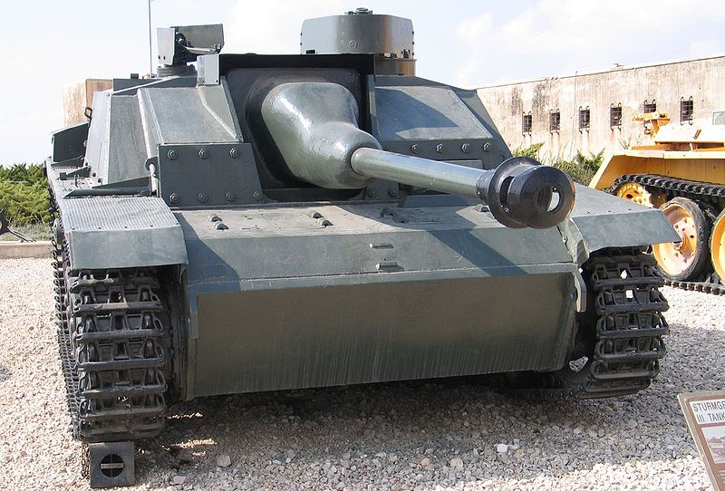
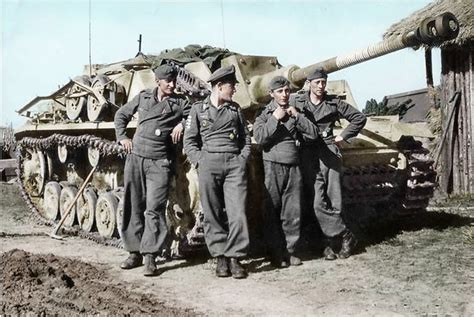
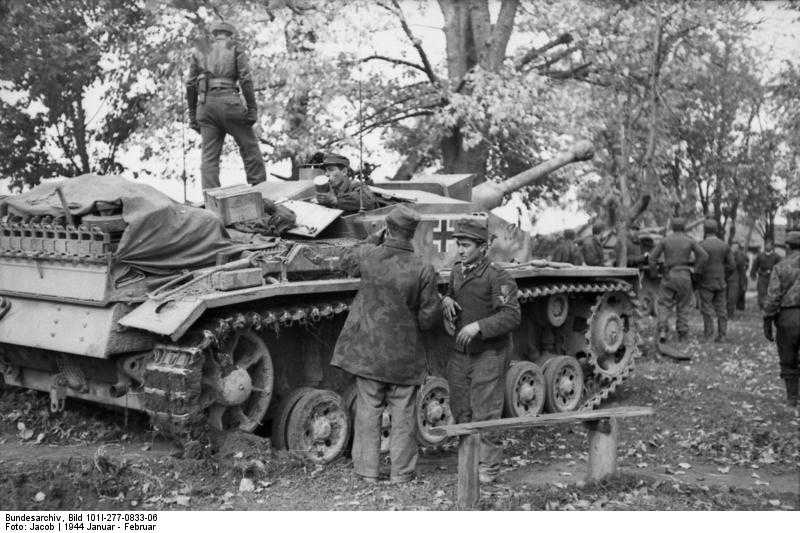
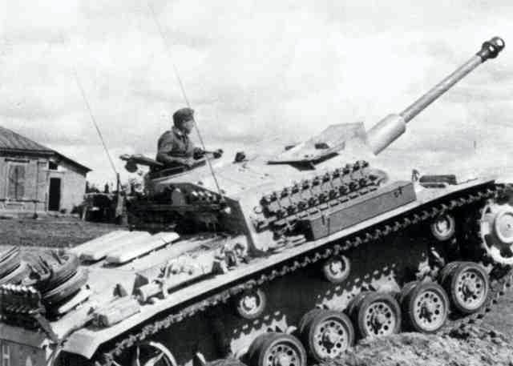

The sturmgeschütz III
The StuG III (official designation: Sturmgeschütz III, ordnance inventory: Sd.Kfz. 142) was a German 4 member crew (tank commander,
driver, gunner and loader) assault gun (hence the name) to which goes the honour of being the most produced German fully-tracked
armored fighting vehicle during the war and arguably the most commonly encountered German tank of that period.
Top speed: 40 km/h (25 mph)
Cross-country speed: 10-12 km/h (6-7 mph)
Mass: 23.9 tonnes (52,690 lbs)
Length: 6.85 m (22 ft 6 in)
Width: 2.95 m (9 ft 8 in)
Height: 2.16 m (7 ft 1 in)
Armour: 16–80 mm (.62–3.15 in)
Range (roads): 155 km (96 mi)
Range (cross country): 95 km (60 mi)
Main armament: 1 × 7.5 cm StuK 40 L/48
54 rounds
images of the tank:




Return Back